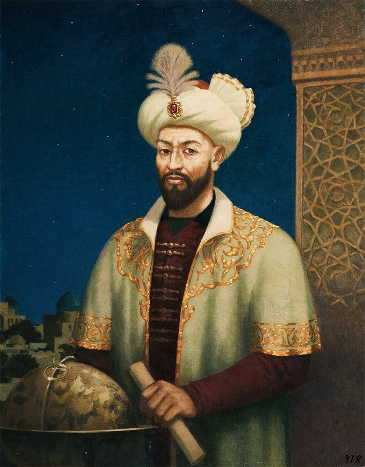

MAVZU : Yuksak ma'naviyatli yoshlarni tarbiyalashda O'rta Osiya allomalarining ilmiy meroslqrni o'rni (allomalarning ilmiy faoliyati misolida)

Reja:
- O`rta Osiyo - sharqining yuksak ma`naviyat va yirik tafakkur markazi
- O`zbekistonda XVI-XIX asrlar davri ma`naviyat va ma`rifati
- Sharq mutaffakirlarning farzandtarbiyasi haqidagi fikrlari
Orta Osiyo tarixiy voqealarga goyat boy olka bolishi bilan birga azaldan ilm-fan, madaniyat va manaviyatning markazlaridan biri bolib kelgan. Bu olka dunyoga manaviyat va marifatning barcha sohalarida yuzlab, minglab jahonshumul ulug zotlar, davlat arboblarini tarbiyalab bergan. Umumbashariyat marifatparvarligini yaratishda buyuk ajdodlarimiz bevosita ishtirok etganlar, uning taraqqiyoti va boyishiga ulkan hissa qoshganlar. Orta Osiyoning madaniy merosi jahon madaniyati va marifatining zuviy ajralmas tarkibiy qismidir.
Endilikda jahon manaviyati va marifati saltanatida oz orinlariga ega bolgan uluglarimizni teran anglash, organish va uluglash vaqti keldi. Afsuski, salkam 150 yillik mustamlakachilik, 70 yillik totatitar tuzum hukmronligi davrida respublikamiz yosh avlodi, Islom Karimov aytganidek, «...necha yillar bizni tariximizdan, dinmizdan, manaviy merosimizdan gofil etishga urindilar, - natijada ular oz xalqning tarixini, uning boy tabiiy-ilmiy, ijtimoiy-falsafiy, axloqiy madagiyatidan bahramand bolish, organishdan mahrum bolib keldi»
Ajdodlarimiz ezozlab kelgan, asrlar qaridan olib otilgan falsafiy-axloqiy pand- nasihatlar, qadriyatlar ataylab, maqsadni kozlab yurgizilgan siyosat qurboni boldi, etibordan chetda qoldi. Bu esa yosh avlodning manaviyatiga salbiy tasir otkazdi. Vaholanki, Islom Karimov «Ozbekistonning oz istiqlol va taraqqiyot yoli» kitobida takidlanidek: «...otmishdagi allomalarning bebaho merosi qanchadan-qancha avlodlarning manaviy-ruhiy ongini va turmush tarzini shakllantirgan edi va u hamon tasir korsatmoqda».
Mustaqillik tufayli organish, tahlil etish imkoniyatiga ega bolgach, ona zaminimiz manaviy merosini chuqurroq organish biz yoshlarning vazifamiz, inchunun, oz tarixini bilmagan xalqning kelajagi ham bolmaydi.

IX-XV asrlarni Yaqin va Orta Sharq mamlakatlarida shartli ravishda «Renessans» (uygonish) davri deb atashadi. Manaviyat va marifatning goyat gullab-yashnashi bu davr uchun xarakterli bolgan. Bu davrda qomusiy ilm egalari, ajoyib shoirlar, buyuk davlat arboblari etishib chiqqan. Dunyoviy fanlarning tez suratlarda taraqqiy etishi keng tarjimonlik faoliyatiga tasir etdi. Bu jarayon, ayniqsa halifa Mamun davrida ( yy.) Bagdodda «Bayt-ul-hikma» (Donolar uyi) tashkil etilgan paytda tezlashdi. Yunon falsafasi va tabobati, hind hisobi, al-ximiya va ilmu nujumga oid asarlar arab tiliga ogirildi. Bunda Markaziy Osiyodan etishib chiqqan mutafakkirlar al-Xorazmiy, al-Fargoniy, al-Farobiy, Ibn Sino, al-Beruniy kabi mutafakkirlar ham katta rol oynadilar. Renessans – uygonish davri madaniyati, manaviyati va marifati mohiyat-etibori bilan dunyoviy, gumanistik dunyoqarashi, antik davr madaniy merosiga murojaat qilish, bamisoli uning qayta uygonishni anglatadi. Uygonish davri namoyondalari qarashlari insonning cheksiz imkoniyatlariga, uning irodasiga, aql-idrokiga ishonib qarashi bilan ajralib turadi. Fanda Sharq va /arb uygonish davri tushunchalari ishlatiladi. Ular umumiy, oxshash tomonlari bilan birga, malum farq, oziga xos xususiyatlari jihatidan ham ajralib turadi. Avvalo ular davr nuqtai nazaridan farqlanadi. Ilk Sharq uygonish davri IX-XII asrlarni, songgi uygonish davri XIV-XV asrlarni oz ichiga olsa, /arb uygonish davri XV-XVII asrlarni oz ichiga olishi bilan farqlanadi. /arb uygonish davri uchun feodalizmga, dinga qarshi kurash xos bolsa, Sharqda masalaning garbdagidek keskin qoyilishini kormaymiz. Sharq va /arb uygonishi uchun umumiy xususiyatlar antik davrga murojaat qilish, uni qayta tiriltirish, tabiiy fanlar rivoji, fanda universallikni (qomusiylik), gumanizmni targib etish va boshqalarda namoyon boladi.
XVI-XIX asrlarda Orta Osiyo xalqlari manaviy-marifiy tafakkur taraqqiyoti ikki yonalishda bordi. Birinchisi Orta Osiyoning ozida roy berdi. Ikkinchisi Hindistonda Boburiylar davridagi Orta Osiyolik mutafakkirlarning ijodida namoyon boldi (Bobur, Humoyun, Akbar, Shohjahon va boshqalar).
XVII asrning ikkinchi yarmi va XVIII asrning boshlarida Orta Osiyo manaviy-marifiy qarash rivoji Boborahim Mashrab ( ) nomi bilan chambarchas bogliq. Mashrabdan boy manaviy badiiy meros qolgan. Mashrab osha vaqtda Yaqin va Orta Sharq mamlakatlarida tarqalgan tasavvufning qalandarlik oqimiga etiqod qilib, ozining isyonkorona sherlari bilan jamiyatdagi adolatsizlikka qarshi kurash olib borishga harakat qilgan. Oz gazallarida axloqiy, manaviy poklikka erishish, hayotdagi illatlarga qarshi kurashni kuylaydi.
U ozi yashagan davr hokimlaridan adolatni kutadi. Hatto ularga murojaat qilib, xalq togrisida gamxorlik qilishni, ularning arz-dodiga quloq solishni soraydi. Mashrab kishilarni boylikka hirs qoymaslikka, ozgalarga yaxshilik qilishga, sahiylikka, halol bolishga, oz mehnati evaziga yashash, nafsni tiyishga chaqiradi. Mashrab oz ijodida xulq-odob masalalariga katta etibor berib, odamlarni yaramas hatti-harakatlardan, takabburlik va yolgon sozlashdan saqlanishga undaydi. Uning manaviy-axloqiy dunyoqarashida farzandning ota-onani hurmat qilishi, ularni yuksaklikka kotarish goyasi muhim orin tutadi. Xususan, farzanddan otaning rozi bolishi lozimligi, aks holda yomon oqibatlarga olib kelishi haqida yozadi. Mashrab ijodidagi bunday goyalarning mustaqil Ozbekiston yoshlarini manaviy kamolga etkazishda ahamiyati katta. XVII asrning ikkinchi yarmi va XVIII asrning boshlarida ijod qilgan Orta Osiyolik mutafakkirlardan biri Mirza Abdulqodir Bedildir ( ). Undan juda boy manaviy meros qolgan. Unga Sharq Gegeli degan unvon, tavsif berilganki, bu uning zamonasining hamda Sharqning buyuk va yuksak manaviyat-marifat egasi bolganligini korsatadi. Bedil oz asarlarida avvalo inson haqida, mirishkor dehqon haqida alohida mehr, hurmat va ehtirom bilan gapiradi. U insonni irqiy, milliy va diniy etiqodlaridan qatiy nazar hurmat va ehtiromga sazovor oliy zot deb biladi. Bu haqida shunday deydi: Har kimki, hazrati insonni sajdaga sazovor demasa, u malundir. Qanday ajoyib fikr. Ushbu fikr har qanday davr uchu ham adolatli va oliyjanobdir. Inson borliqning, olamning toji. Inson oz baxtini ozi yaratadigan zot deb qaraydi. Odam abadiy yashashi mumkinmi? – degan savolga mutafakkir ijobiy javob beradi.
XVII-XIX asrlar manaviyati va marifati rivojida Turdi, Huvaydo, Gulhaniy, Mahmur, Nodirabegim, Uvaysiy, Munis Xorazmiy, Ogahiy, Feruz va boshqalarning orni va roli ham beqiyosdir.
XIX asrda Orta Osiyoda manaviyat va marifat rivoji Ahmad Donish ( ) ijodi va marifatparvarlik faoliyati bilan chambarchas boglanib ketganligini alohida qayd etish lozim. U inson turli fanlarni egallab, dunyo sirlaridan voqif bola oladi, deydi. Biz – dunyoni gullab-yashnatish uchun, er osti boyliklarini topish uchun, dunyoning ajoyib sirli tomonlarini tadqiqetish uchun, uning hamma qitalarini va aholisini bilish uchun tugilganmizdeydi Ahmad Donish. U ilmni, marifatni rivojlantirish, xalqni savdoxon qilish orqali qoloqlikdan qutilish mumkin deb marifatparvarlik goyalarini ilgari suradi. Ozbek marifatchiligi Muqumiy, Furqat, Avaz Otar, Zavqiy va boshqalar ham alohida orin tutadi. Marifatparvarlik goyalari Maxmudxoja Behbudiy, Munavvar qori, Abdulqodir Shakuriy, Ishoqxon Ibrat, Abdulla Avloniy, Abdurrauf Fitrat, Abdulhamid Cholpon, Abdulla Qodiriylar kabi jadidchilar faoliyati va ijodida, millat ozodligi uchun kurash bilan boglanib ketganligini alohida qayd etish lozim. Jadidchilik aslida marifatparvarlik harakatining korinishidir. Marifatning lugaviy manosi bilim demakdir. Marifatni hayotgan singdirish esa maorif tizimi orqali amalga oshiriladi. Marifat bilim va madaniyatning mazmuni bolib, maorif esa ushbu mazmunni yoyish qurolidir. Marifat asosan umumiy va orta maxsus bilim beruvchi maktab va oquv yurtlarida amalga oshiriladi. Marifat tushunchasi maorif tushunchasidan keng bolib, bilim va madaniyatni yoyish va yuksaltirishning barcha turlarini va shakllarini oz ichiga oladi. Insoniyatning bir jamiyatdan ikkinchi jamiyatga otishi marifatparvarlikdan boshlanadi. Jadid sozi arabchadan yangilanish, yangi usul manolarini anglatadi. U yangi, zamonaviy maktab, matbuot, milliy taraqqiyot usullari, yollari va tarafdorlarining umumiy nomi. Jadidchilikning asosiy goya va maqsadlari quyidagilardan iborat: Turkistonni orta asrchilik, feodal qoloqlik, xurofotlardan tozalash, millatni zamonaviy taraqqiyot yoliga olib chiqish, milliy davlatni bunyod etish, konstitustion, parlament va prezident idora usulidagi ozod jamiyatni qurish, turkiy tillarga davlat maqomini berish, milliy qoshin tuzish va h.k.lardan iboratdir.
Farobiy bilimidan marifatli yetuk odamning obrazini tasvirlar ekan, bunday deydi: «Har kimki ilm xikmatni organmagan desa, uni yoshligidan boshlasin, sog – salomatligi yaxshi bolsin, yaxshi ahloq va odobi bolsin, sozining uddasidan chiqsin, yomon ishlardan saqlangan bolsin, barcha qonun – qoidalarni bilsin, bilimdan va notiq bolsin, ilmli va dono kishilarni xurmat qilsin, ilm va ahli ilmdan mol – dunyosini ayamasin, barcha real moddiy narsalar togrisida bilimga ega bolsin».
Bu fikrlardan Farobiyning talim – tarbiyada yoshlarni mukammal inson qilib tarbiyalashda xususan, aqliy – axloqiy tarbiyada aloxida etibor berganligi korinib turibdi, uning etiqodicha, bilim, marifat, albatta yaxshi axloq bilan bezatmogi lozim, aks holda kutilgan maqsadga erishilmaydi, bola yetuk bolib yetishmaydi.
Ibn Sino bola tarbiyasi va tarbiya usullari haqida qimmatli fikrlarini bildirgan. Ibn Sino bolaning axloqiy tarbiyasi haqida bildirgan fikrlarida uy – rozgor tutish masalalari xususida ham soz yuritadi. Bolani tarbiyalash oila ota – onaning asosiy maqsadi va vazifasidir. Oz kamchiliklarini tuzatishga qodir bolgan ota – ona tarbiyachi bolishi mumkin. Axloqiy tarbiyada eng muxim vositalar bolaning nafsoniyatiga, gururiga tegmagan holda, yakkama – yakka suxbatga bolish unga nasixat qilishdir Ibn Sino bolada axloqiy xususiyatlarni mehnat, jismoniy aqliy tarbiya bilan ozviy birlikda shakllantirishni, uni inson qilib kamol toptirishda asosiy omil deb biladi. Yusuf Xos Xojibning uqtirishicha har bir kishi jamiyatga munosib bolib kamol topmogi kerak. Buning uchun u tugilgan kundan bolab zarur tarbiyani olmogi lozim. U qobil qizning tarbiyasi haqida fikr yuritar ekan, ularning ozlariga xos xususiyatiga etibor berishni takidlaydi. Farzandlar tarbiyasi nihoyatda erta boshlanmogi shart. Shundagina ularning noorin xatti – harakatlariga berilishining oldi olinadi.
Mirzo Ulugbekning oila muhiti soglom avlodni yetishtirish haqidagi fikrlari shundan iboratki, alloma uqtirishicha, bolaning bilim olishiga bolgan qiziqish, xavasini oshirishda u tarbiyalanayotgan muxit muxim orinni egallaydi. Oilada ota – onalar ayniqsa oqimishli ota – onalar oz farzandlarining haqiqiy inson bolib kamol topishiga aloxida etibor berishlari lozim.
Alisher Navoiy bolaning voyaga yetishida, kamol topishida tarbiyaning kuchi va qudratiga alohida etibor beradi. Tarbiya natijasida bolaning foydali va yetuk kishi bolib osishiga ishonadi. Yosh bolaning juda kichik yoshidan boshlab tarbiyalamoq zarur. Tarbiya insonga ozida yaxshi odat va fazilatlar xosil qilishga yordam beradi. U odam shaxsi kishilar bilan munosabatda, ayniqsa kishilarning bir – birlariga bolgan ruxiy manaviy tasirlari natijasida tarkib topadi deb voyaga yetkazishda asosiy omillardan biri tarbiya ekanligi oqtiradi Voiz Al – Koshifiyning oqtirishicha insonni talim – tarbiya orqali qayta tarbiyalash aqliy qobilyatni ostirish mumkin. Koshifiy ozining pedagogik qarashlaricha bolalarda mustaqil fikrlash qobiliyatini ostirish masalasiga aloxida etibor beradi. Ota – onalar muallimlardan bu masalaga aloxida axamiyat berishni talab etadi. Bu masalada oilaviy hamda tashqi muxit muxim orin tutadi. Bola togri sozli, vadaga vafodor, yaxshi xulqli qilib tarbyalanishi kerak. Jaloliddin Davoniy ota – onaning bolani tarbiyalashdagi axamiyatiga keng toxtalgandi. Uning fikricha oila tarbiyasida ota ham, ona ham teng huquqli, teng ishtirok etishi bolaning yaxshi xulq – odob qoidalarini muayyan bir kasbni egallashiga komaklashishi ilm – fan va kasb – hunar egallashining moddiy asosi bolmishoziq – ovqat, kiyim – kechak, kerakli buyum va jixozlarni yetkazib berish uchun jozibalik korsatishi kerak. Sharq mumtoz adabiyotining buyuk namoyondalaridan biri Muslixiddin Sadi Sheroziy Sheroz shaxrida 1184 yilda tugildi. Sadining fikricha, oila, bolaning baxti, kelajagi uchun zamin yaratuvchidir. Oilada asosiy tayanch otadir. U masuliyatli tarbiyachidir. Ota oz bolalarini tarbiyalashi, oqitishi, hunarga orgatishi, jismonan chiniqtirishi kerak.
Sayt Elbek Nurov tomonidan tayyorlandi
E`tiboringiz uchun Rahmat!!!